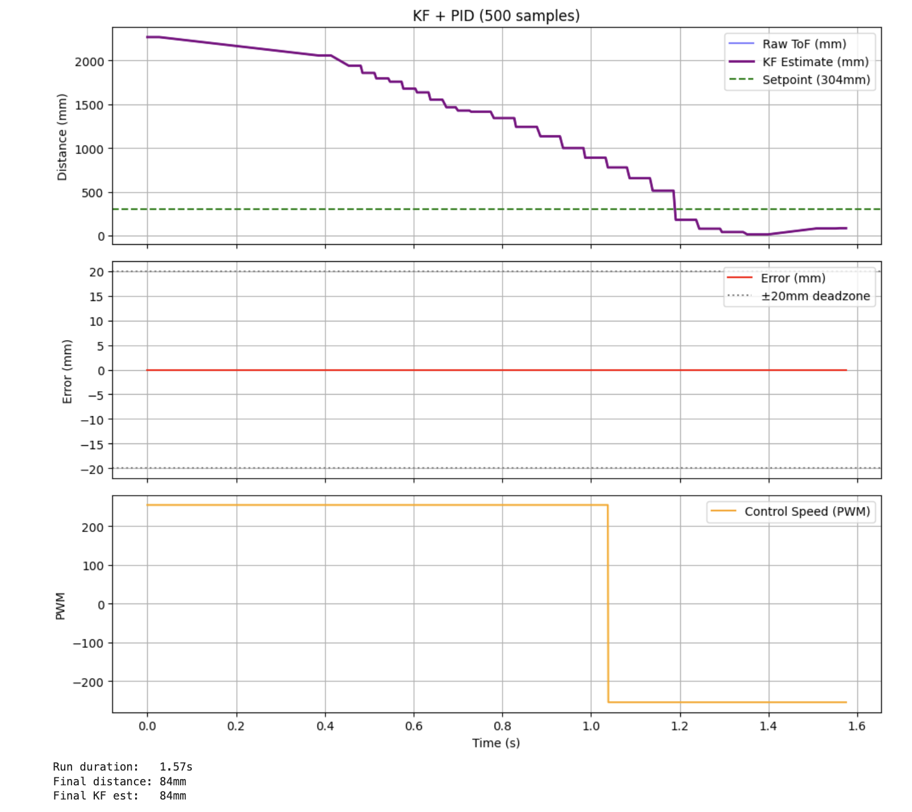

Lab 8: Stunts
Objective
The purpose of this lab is to combine everything built in previous labs, motor control, ToF sensing, and the Kalman Filter, to execute a fast stunt. I chose Task A: Flip. The robot start at least 4 meters from the wall, drive forward at full speed, and upon reaching 1 foot from the wall, perform a flip and drive back past the starting line.
Key Code Changes from Lab 7
Lab 8 builds directly on the Lab 7 KF+PID codebase. The main additions are
removing sensor 1 (see debugging section), adding the runStunt()
function, and adding PERFORM_STUNT to the command enum.
Single Sensor Setup
After persistent sensor 1 initialization failures (see debugging section), I removed sensor 1 entirely. Sensor 2 is now the only ToF sensor, initialized directly at its default I2C address with no XSHUT pin manipulation:
SFEVL53L1X sensor2;
int distance2 = 0;
// In setup():
if (sensor2.begin() != 0) {
Serial.println("Sensor 2 failed!");
while(1);
}
Serial.println("Sensor 2 OK!");
sensor2.setDistanceModeShort();Stunt State Machine
The stunt runs as a two-phase state machine. Full-speed forward until the KF
estimate drops below STUNT_TRIGGER_DIST, then full-speed reverse
for STUNT_REVERSE_MS milliseconds. The PID controller is
completely bypassed, with the car runs at constant 255 PWM in both directions.
A raw ToF hard safety independently triggers reverse if the sensor reads
below 400mm, catching cases where the KF hasn't initialized yet:
#define STUNT_TRIGGER_DIST 800
#define STUNT_REVERSE_MS 800
void runStunt() {
kf_predict(255.0f);
if (sensor2.checkForDataReady()) {
distance2 = sensor2.getDistance();
sensor2.clearInterrupt();
sensor2.stopRanging();
sensor2.startRanging();
if (!kf_initialized) {
mu(0, 0) = -(float)distance2;
mu(1, 0) = 0;
last_predict_time = millis();
kf_initialized = true;
return;
}
kf_update((float)distance2);
}
if (distance2 > 0 && distance2 < 400) {
backward(255);
stunt_phase_reversing = true;
stunt_reverse_timer = millis();
}
if (!kf_initialized || distance2 == 0) return;
float kf_dist = kf_distance();
if (kf_dist < 0 || kf_dist > 5000) kf_dist = (float)distance2;
if (!stunt_phase_reversing) {
if (kf_dist > STUNT_TRIGGER_DIST) {
forward(255);
} else {
stunt_phase_reversing = true;
stunt_reverse_timer = millis();
backward(255);
}
} else {
if (millis() - stunt_reverse_timer < STUNT_REVERSE_MS) {
backward(255);
} else {
stop();
stunt_running = false;
sensor2.stopRanging();
}
}
}runStunt(). The KF predict step runs every iteration for
continuous position estimation between slow ToF updates. The two-phase
state machine (forward to reverse) is controlled by
stunt_phase_reversing. cnstant 255 PWM
in both directions was used to maximize momentum for the flip.
Updated Command Enum
enum CommandTypes {
START_LINEAR_PID,
STOP_LINEAR_PID,
SEND_LINEAR_PID_DATA,
SET_LINEAR_PID_GAIN,
PERFORM_STUNT,
PERFORM_DRIFT,
};PERFORM_STUNT (index 4) added to the command enum.
The Python CMD_lab8 enum in cmd_types.py mirrors these indices exactly.
Guard Against Uninitialized Distance
The main bug in earlier testing was that the car immediately drive backward on start
because distance2 = 0 before the first ToF reading arrived,
making the PID error hugely negative. The fix is a guard that holds the car
still until both the KF is initialized and a valid ToF reading exists:
if (!kf_initialized || distance2 == 0) return;runKFPIDController() and runStunt().
Prevents motor commands from running until the first real sensor reading
has arrived and initialized the KF state.
Debugging
ToF Sensor Initialization Failures
Throughout this lab I continued to struggle with the bent Qwiic MultiPort lead issue first identified in Lab 6. The root cause is that one of the four I2C leads on my SparkFun Qwiic MultiPort was bent while plugging in a connector, leaving marginal contact. I bent it back with tweezers, but the repair was never reliable. After every recompile and upload, I had to physically unplug and replug the ToF sensor cables to get initialization to succeed.
I have mentiooned this issue every recent report, but in Lab 8, the situation got worse: sensor 2 started failing to initialize
consistently even after replugging, while sensor 1 initialized fine. Since
sensor 1 is never used for distance measurement (all my code uses sensor 2),
I resolved this by unplugging sensor 1's Qwiic cable entirely and
removing all sensor 1 code. Sensor 2 then initializes at its default I2C
address 0x29 with no conflicts and no XSHUT toggling required.
The Serial Monitor now reliably prints "Sensor 2 OK!" on every boot.
Car Driving Backward on Start
On first testing, the car immediately drove backward when the stunt was
triggered. The issue was that distance2 starts at 0 before
any ToF reading arrives, so kf_dist = 0, making
linear_error = 0 - 304 = -304 (negative), which triggers
backward(). The fix was adding the
if (!kf_initialized || distance2 == 0) return; guard described above.
Car Not Flipping - Attempt 1 (No Weight)
In the first attempt, the car drove forward and reversed at the trigger
distance, but did not flip — it just skidded backward. The reverse duration
of 800ms was not enough to generate sufficient angular momentum. I increased
STUNT_REVERSE_MS but the car still did not flip.
Car Stopping After Adding Weight — Attempt 2
Following the lab instructions suggesting adding weight to the front to lower the center of mass and make flipping easier, I taped weight to the front of the car. However, the car then stopped after moving forward and never reached the wall. The added weight was too heavy and the motors could not overcome the increased rolling resistance at the deadband threshold. I removed the weight.
Successful Stunt - Attempt 3
After removing the weight, I tuned STUNT_TRIGGER_DIST and
STUNT_REVERSE_MS and got the flip to work. The key insight
was that the trigger distance needed to be set so the car is still moving
at maximum speed when it reverses — triggering too early meant the car had
already started to coast. With STUNT_TRIGGER_DIST = 800 and
STUNT_REVERSE_MS = 800, the flip executes consistently.
Stunt Attempts
Attempt 1: No Weight Added — Unsuccessful
First attempt with no weight added. The car drives forward at full speed, triggers the reverse at the correct distance, and quickly reverses — but does not generate enough angular momentum to flip. The car just skids backward without tipping over. The backward speed also is slower.
Attempt 2: Weight Added to Front — Unsuccessful
Second attempt with weight taped to the front of the car. The car stops shortly after starting — the added weight increased rolling resistance past the motor deadband threshold, preventing forward motion. Weight was subsequently removed.
Attempt 3: No Weight — Successful Flip
Successful flip with no weight added. The car drives forward at full 255 PWM, the KF triggers the reverse at 800mm from the wall, and the car flips. After flipping, the car drives back in the direction it came from.
Sensor Data During Successful Run

References
- Lab 8 Instructions — Fast Robots @ Cornell
- Jeffery Cai's Lab 8 Report (referenced for how Jeffery approach this task)
- Grammarly writing assistance is used to fix my report's grammar and sentence flow.